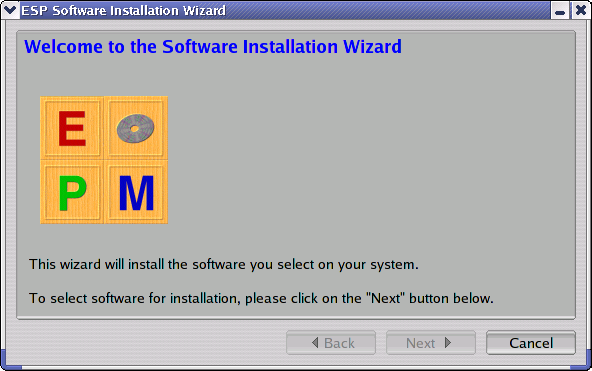

This chapter describes how to use EPM to package your own software packages.
EPM reads one or more software "list" files that describe a single software package. Each list file contains one or more lines of ASCII text containing product or file information.
Comments lines start with the # character,
directive lines start with the % character,
variables lines start with the $ character, and
file, directory, init script, and symlink lines start with a
letter.
Every list file needs to define the product name, copyright, description, license, README file, vendor, and version:
%product Kung Foo Firewall
%copyright 1999-2005 by Foo Industries, All Rights Reserved.
%vendor Foo Industries
%license COPYING
%readme README
%description Kung Foo firewall software for your firewall.
%version 1.2.3p4 1020304
The %license and %readme directives
specify files for the license agreement and README files for the
package, respectively.
The %product, %copyright,
%vendor, and %description directives
take text directly from the line.
The %version directive specifies the version
numbers of the package. The first number is the human-readable
version number, while the second number is the integer version
number. If you omit the integer version number, EPM will
calculate one for you.
Each file in the distribution is listed on a line starting with a letter. The format of all lines is:
type mode owner group destination source options
Regular files use the letter f for the type
field:
f 755 root sys /usr/bin/foo foo
Configuration files use the letter c for the
type field:
c 644 root sys /etc/foo.conf foo.conf
Directories use the letter d for the type field
and use a source path of "-":
d 755 root sys /var/spool/foo -
Finally, symbolic links use the letter l (lowercase L) for the type field:
l 000 root sys /usr/bin/foobar foo
The source field specifies the file to link to and can be a relative path.
Wildcard patterns can be used in the source field to include multiple files on a single line:
f 0444 root sys /usr/share/doc/foo *.html
Subpackages are optional parts of your software package. For example, if your package includes developer files, you might provide them as a subpackage so that users that will not be developing add-ons to your software can omit them from the installation.
| Note: Subpackages are implemented as native subsets of the main package for the AIX, HPUX, IRIX, Solaris, and Tru64 formats and as separate packages that depend on the main (parent) package for all other formats. |
To define a subpackage, use the %subpackage
directive followed by a %description directive:
%subpackage foo
%description One-Line Description of Foo
Files, scripts, and dependencies that follow the
%subpackage directive are treated as part of that
subpackage. Specifying the %subpackage directive
with no name returns processing to the main (parent) package.
You can alternate between subpackages as many times as you like:
%description Main package description
f 0755 /usr/bin/bar bar
%subpackage foo
%description Foo programs
f 0755 /usr/bin/foo foo
%requires bla
%subpackage
f 0644 /usr/share/man/man1/bar.1
%subpackage foo
f 0644 /usr/share/man/man1/foo.1
The above example creates a package containing the "bar"
program and man page with a subpackage containing the "foo"
program and man page. The "foo" subpackage depends both on the
main package (implicit %requires) and another
package called "bla".
The epm(1) program is used to build software
package from list files. To build a portable software package for
an application called "foo", type the following command:
epm foo ENTER
If your application uses a different base name than the list file, you can specify the list filename on the command-line as well:
epm foo bar.list ENTER
|  |
Once you have created the software package, you can install it. Portable packages include an installation script called product.install, where "product" is the name of the package:
cd os-release-arch ENTER
./product.install ENTER
After answering a few yes/no questions, the software will be
installed. To bypass the questions, run the script with the
now argument:
cd os-release-arch ENTER
./product.install now ENTER
EPM also provides an optional graphical setup program (Figure 3.1). To include the setup program
in your distributions, create a product logo image in GIF or XPM
format and use the --setup-image option when
creating your distribution:
epm --setup-image foo.xpm foo ENTER
This option is only supported when creating for portable and MacOS X software packages.
EPM can also produce vendor-specific packages using the
-f option:
epm -f format foo bar.list ENTER
The format option can be one of the following keywords:
aix - AIX software packages.
bsd - FreeBSD, NetBSD, or OpenBSD
software packages.
depot or swinstall - HP-UX
software packages.
dpkg - Debian software packages.
inst or tardist - IRIX
software packages.
native - "Native" software packages
(RPM, INST, DEPOT, PKG, etc.) for the platform.
osx - MacOS X software packages.
pkg - Solaris software packages.
portable - Portable software
packages (default).
rpm - Red Hat software packages.
setld - Tru64 (setld) software
packages.
slackware - Slackware software
packages.
Everything in the software list file stays the same - you just
use the -f option to select the format. For
example, to build an RPM distribution of EPM, type:
epm -f rpm epm
The result will be one or more RPM package files instead of the portable package files.
EPM creates the package files in the output directory. As mentioned in Chapter 1, "Installing Using the Portable Distribution", the default output directory is based on the operating system name, version, and architecture. Each package format will leave different files in the output directory.
AIX packages are contained in a file called name.bff, where "name" is the product/package name you supplied on the command-line.
BSD packages are contained in a file called name.tgz, where "name" is the product/package name you supplied on the command-line.
HP-UX packages are contained in two files called
name.depot.gz and name.depot.tgz, where
"name" is the product/package name you supplied on the
command-line. The name.depot.gz file can be supplied
directly to the swinstall(1m) command, while the
name.depot.tgz file contains a compressed
tar(1) archive that can be used to install the
software from CD-ROM or network filesystem.
Debian packages are contained in a file called
name.deb or name.deb.tgz when there are
subpackages, where "name" is the product/package name you
supplied on the command-line. The name.deb.tgz file
contains a compressed tar archive containing
name.deb and name-subpackage.deb files that
can be installed from CD-ROM, disk, or network filesystem.
IRIX packages are contained in a file called name.tardist, where "name" is the product/package name you supplied on the command-line.
MacOS X packages are contained in a file called name.dmg, where "name" is the product/package name you supplied on the command-line.
RPM packages are contained in a file called
name.rpm or name.rpm.tgz when there are
subpackages, where "name" is the product/package name you
supplied on the command-line. The name.rpm.tgz file
contains a compressed tar archive containing
name.rpm and name-subpackage.rpm files that
can be installed from CD-ROM, disk, or network filesystem.
Slackware packages are contained in a file called name.tgz, where "name" is the product/package name you supplied on the command-line.
Solaris packages are contained in two files called
name.pkg.gz and name.pkg.tgz, where "name"
is the product/package name you supplied on the command-line. The
name.pkg.gz file is a compressed package file that can
be used directly with the pkgadd(1m) command, while
the name.pkg.tgz file is a compressed tar
archive that can be used to install the software from CD-ROM,
disk, or network filesystem.
Tru64 packages are contained in a file called name.tar.gz, where "name" is the product/package name you supplied on the command-line.